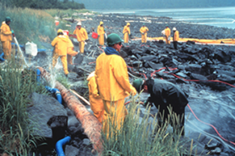

Administración de riesgos
Introducción
La gestión de riesgos se ha convertido en un pilar esencial en el ámbito financiero, empresarial y social. Nos ayuda a anticipar, medir y reducir las amenazas que podrían poner en peligro la estabilidad económica y operativa de personas, organizaciones y países. Sus orígenes se remontan a prácticas antiguas, como el comercio marítimo de los fenicios, griegos y romanos, donde se implementaron mecanismos básicos para protegerse contra la pérdida de barcos y mercancías, dando lugar a los primeros contratos de seguros. Sin embargo, fue en el siglo XVII cuando el enfoque recibió un verdadero impulso científico gracias a las contribuciones de los matemáticos Pascal y Fermat, quienes, a través del cálculo de probabilidades y la teoría de juegos, proporcionaron una base matemática para entender la incertidumbre. Desde entonces, el riesgo dejó de ser visto sólo como un fenómeno aleatorio y comenzó a ser considerado como algo que se puede modelar, gestionar y controlar.
A lo largo de la historia, varios eventos han subrayado la necesidad de establecer normas y estructuras institucionales para enfrentar imprevistos.
La evolución de la administración de riesgos es un tema muy interesante que no se puede entender sin mencionar el surgimiento de metodologías cuantitativas como RiskMetrics, desarrollada por J.P. Morgan en los años 90. Esta metodología introdujo el concepto de Value at Risk (VaR), una métrica estandarizada que ayuda a estimar las pérdidas potenciales en condiciones normales de mercado. Gracias a esta innovación, se logró una mayor transparencia y comparabilidad en la gestión del riesgo financiero, convirtiéndose en una herramienta clave para bancos, inversionistas y reguladores.
Al mismo tiempo, los acuerdos de Basilea I, II y III establecieron las bases normativas para la regulación bancaria a nivel internacional. Estableciendo los niveles de capital y liquidez necesarios para enfrentar situaciones adversas. Aunado, con las diversas metodologías que ofrecen herramientas técnicas para medir, modelar y demostrar el nivel de exposición al riesgo de mercado representan el lado de la intersección de las prácticas financieras, las innovaciones matemáticas y las regulaciones internacionales, así también, consolidan lo los pilares esenciales para una administración de riesgos integral y eficaz.
Origen histórico
La probabilidad
El origen de la administración de riesgos presenta sus bases desde varias civilizaciones atrás. Un precursor fundamental para empezar a plantear la necesidad de gestionar, administrar y manejar los peligros y amenazas se debe a los juegos de azar, sobre todo al inicio con la aparición del concepto de probabilidad.
En el siglo XVII sobre todo en la clase alta francesa se empezaron a asentar los pilares para la resolución de problemas de apuestas, en la búsqueda de la resolución de estos problemas los matemáticos Pascal y Fermat permitieron dar origen a los principios del Cálculo de probabilidades y la Teoría de Juegos.
Con esto, el estudio de los escenarios cambiantes en la toma de decisiones se convirtieron en una herramienta para resolver la mejor manera de controlar o distribuir el riesgo.
Los Seguros
Por otro lado, también se asocia el desarrollo del concepto con la aparición de los seguros y su gestión de riesgos contingentes, con el comercio marítimo practicado en la época clásica por los griegos y los romanos, pero también desde mucho antes por los fenicios, quienes sentaron las bases de esta actividad en el mundo antiguo. Desde entonces existía un contrato simple: se fijaba un monto a pagar (menor o igual al costo del barco y su carga), y sobre éste se acordaba un porcentaje que se pagaba de inicio. Si la embarcación no llegaba a su destino se pagaría, de forma obligatoria, el monto preestablecido.
Los encargados de pagar estos montos fueron los primeros aseguradores que eran personas físicas que asumían individualmente uno o varios riesgos. Durante el siglo XVII cambió un poco esta dinámica, pues ahora estas personas se asociaban y creaban un fondo de contribuciones, creando a su vez las primeras aseguradoras formales donde pasaban a repartir el riesgo que corrían las embarcaciones de ser asaltadas, perder la mercancía, naufragio o incluso el secuestro o pérdida de la tripulación. De manera que, ahora todos estos riesgos eran asumidos entre varios miembros que eran los que conformaban la asociación, en lugar de que recayera en una sola persona.
Es por ello que el estudio de la gestión de riesgos se ha asociado desde hace tiempo con el uso de seguros para proteger a personas y empresas de diversas pérdidas asociadas con accidentes.
Evolución de la administración de riesgos
Con el paso del tiempo,, la tendencia general en el uso actual del término “Administración de Riesgo” comenzó a escucharse a principios de los años 1950, una de las primeras referencias a este concepto proponía que alguien dentro de la empresa u organización debería ser responsable de administrar los riesgos puros de la organización. Para estos tiempos los corporativos solo contaban con un puesto conocido como administrador de seguros pero estos se percibían como muy costosos e incompletos para la protección contra el riesgo puro.
La transición de Administración de Seguros a Administración de Riesgos ocurrió en un periodo de tiempo paralelo al desarrollo de la disciplina académica de la administración de riesgos. Esto debido a que a mitad del siglo XX, en los Estados Unidos de Norteamérica se dio inicio a un proceso orientado a la investigación del riesgo como tal, que trataba de definir su naturaleza, terminología, componentes y selección de herramientas para poder enfrentarlo con eficacia.
El uso de derivados como instrumentos de gestión de riesgos surgió durante la década de 1970 y se expandió rápidamente durante la década de 1980 con la gestión de riesgos por procesos en la medida que las empresas intensificaban su gestión de riesgos financieros.
La regulación internacional de riesgos comenzó en la década de 1980, y las entidades financieras desarrollaron modelos internos de gestión de riesgos y fórmulas de cálculo de capital para protegerse contra riesgos imprevistos y reducir el capital regulatorio.
Posteriormente, en la década de los 90 se acoge el concepto del riesgo vinculado en las acciones, así, anticipando eventos y su impactos futuros, como también el control preventivo.
Simultáneamente, la gobernanza de la gestión de riesgos se volvió esencial, se introdujo la gestión integrada de riesgos y se crearon los puestos de director de riesgos.
Casos prácticos:
El pavoroso incendio que destruyó Londres en 1666.
El 2 de septiembre de 1666 en Londres, un incendio se desató alrededor de las 2 de la madrugada en la tienda del panadero Thomas Farryner en Pudding Lane, a los costados del norte de Támesis.
La paja y la madera de las techumbres y paredes de cada uno de los hogares estaban enormes y secas, así motivando la expansión de las llamaradas, provocando la destrucción de múltiples edificios.
A partir de aquel suceso surgieron las primeras aseguradoras de incendios, como la aseguradora “Fire Offices” asociadas a Nicholas Barbon. Con dicho acontecimiento se comenzaron a realizar brigadas vinculadas con las pólizas y se estandarizaron coberturas.
A partir de este suceso de catástrofe urbana se revelaron correlaciones, es decir, lo llamado actualmente (riesgo catastrófico), fuerzan tarificación, prevención y normas constructivas..
RMS Titanic de 1912
El accidente en el que el transatlántico británico colisionó con un iceberg en la noche del 14 de abril de 1912, pues el sistema de controles de seguridad fallo, provocando el naufragio el 15 de abril y causando la muerte de más de 1,500 de sus pasajeros en el accidente y tripulantes a bordo.
Posteriormente se llevaron a cabo cambios importantes en las normas de seguridad marítima, principalmente por la falta de botes salvavidas para todos los que se encontraban a bordo. Problema ocasionado por la normativa de la época basada en el tamaño del barco, no en el número de personas y la ignorancia de advertencias sobre la catástrofe de icebergs
La comunidad internacional adoptó el convenio SOLAS (International Convention for the Safety of Life at Sea), vigente 1974, estándar central de seguridad marítima, donde se establece normas mínimas para la construcción, equipamiento y operación de buques mercantes para garantizar la seguridad de la vida en el mar. Con esto, los desastres no asegurables desencadenaron regulaciones técnicas y mejoras de control que reducen severidad.
Exxon Valdez (1989).
El jueves 23 de marzo de 1989, el petrolero Exxon Valdez salió de la Terminal de Olpeos Alyeska en Valdez, Alaska. A medianoche del 24 de marzo el barco encalló duramente en Bligh Reef. Así derramando alrededor de 262.000 barriles (11 millones de galones) de crudo Alaska North Slope en las aguas del Prince William Sound. Con los medios y herramientas de esta los socorristas federales, estatales y Exxon no pudieron hacer frente a una catástrofe de esta escala.

Así, surgió la ley de contaminación por hidrocarburos de 1990 (Oil Pollution Act 1990) “OPA90 enfocada a fortalecer la prevención y respuesta (planes obligatorios, fondo fiduciario financiado por impuestos y mayor responsabilidad).
El derrame de Exxon Valdez se ubicó como el punto de referencia con el que se medirían todos los demás derrames y respuestas de derrame de Estados Unidos: en escala, alcance, costo, controversia, la subestimación de riesgos de crédito, mercado, apalancamiento y fallas de liquidez, etc.
Crisis Financiera Global (2007-2009) Basilea II.
La crisis comenzó con un aumento en los impagos de las hipotecas en Estados Unidos, otorgadas a usuarios con poca capacidad de pago. Se creó una burbuja en el mercado inmobiliario estadounidense, donde los precios de las viviendas subieron de manera exponencial, lo que provocó una sobreinversión y la construcción de demasiadas casas.
La tasa de interés que los bancos cobraban a sus clientes de bajo riesgo (generalmente tres puntos porcentuales por encima de la tasa de fondos federales) los alentó a prestar incluso a clientes de alto riesgo, a tasas de interés más altas.
Los bancos de inversión englobaron estas hipotecas en productos financieros complejos y las revendieron a otros bancos, sin considerar otros aspectos, causando una gran disminución de la liquidez, la quiebra del banco de inversión Lehman Brothers, una Gran Recesión global con desempleo masivo y la necesidad de rescates gubernamentales para bancos en riesgo de quiebra.
Basilea I : La base de la regulación financiera internacional
El Comité de supervisión bancaria de Basilea se constituye en 1974 dado la crisis que se originó por la insolvencia de los bancos Bankhaus Herstatt y Franklin National Bank , se observó la necesidad de crear un marco regulatorio internacional que tuviera como objetivo principal regular las actividades de los bancos con el fin de asegurar estabilidad en el sistema financiero internacional. El Comité inicialmente se conformó por los presidentes de los bancos centrales más importantes del mundo conocidos como el Grupo de los Diez (G-10) cuyos miembros son Bélgica, Canadá, Francia, Alemania, Italia, Japón, Países Bajos, Suecia, Suiza, Reino Unido y Estados Unidos, aunque Suiza desempeña un papel menor.
Antes de la creación del primer acuerdo de basilea , las instituciones financieras se enfrentan a una alta volatilidad debido a las crisis bancarias , por lo que el objetivo era estabilidad financiera.
Basilea I es el primer conjunto de regulaciones que constituye el comité de supervisión bancaria de Basilea y fue implementado en 1988. En ella el comité define los requisitos mínimos de capital con el que los bancos debían de contar para hacer frente a los riesgos de crédito, mercado y tipo de cambio. Estos mínimos se calculan como un porcentaje de los activos ponderados por riesgo, manteniendo un capital mínimo del 8% sobre esos activos.
Aún cuando el acuerdo de Basilea I buscaba fortalecer el sistema bancario internacional, muchas instituciones nacionales aplicaron este acuerdo de modo que mejoró la seguridad de estos sistemas bancarios.
Aunque el acuerdo Basilea I fue de gran ayuda y dio una base para la estabilidad financiera en los bancos tuvo algunas limitaciones, al enfrentarse a las nuevas realidades puesto el criterio era muy simple y no lograba abarcar la complejidad de los riesgos de crédito de manera global. Además de que dada la complejidad de las relaciones entre bancos, la regulación debía evolucionar para abordar estos nuevos desafíos.
A pesar de esas limitaciones, Basilea I sirvió como punto de partida para las regulaciones financieras internacionales que vinieron después, como Basilea II y Basilea III, las cuales se han ido perfeccionando para manejar mejor los riesgos financieros y hacer que el sector bancario sea más transparente.
En resumen, Basilea I es un punto clave en la regulación bancaria internacional, porque estableció los niveles mínimos de capital que los bancos deben mantener.
Origen y explicación de Riskmetrics y su relación con Basilea
RiskMetrics es una metodología desarrollada por J.P. Morgan en la década de 1980. En el año de 1994 se hizo su publicación en RiskMetrics Technical Document, se hizo pública la metodología para medir y gestionar el riesgo financiero, especialmente el riesgo de mercado. Esta metodología revolucionó la gestión de los riesgos en los mercados globales puesto que su objetivo era mejorar la transparencia de los riesgos del mercado, creando un punto de referencia para medirlos y de esta forma proporcionar mejor información en cuanto a ellos.
En esta metodología se utilizaron datos históricos para pronosticar la volatilidad de los precios de los activos y las correlaciones entre ellos, esto permitió calcular el Valor en Riesgo (VaR) y tomarlo como una medida de referencia.
El VaR estima la pérdida máxima esperada de un activo durante un periodo determinado para un intervalo de confianza determinado. Esta medida se convirtió en un estándar ya que brinda una forma comparable de cuantificar el riesgo.
RiskMetrics se basa en dos supuestos de modelado fundamentales:
- La rentabilidad de los factores de riesgo se distribuye normalmente, lo que significa que el precio de los activos financieros o los factores de riesgo se modelan como si siguieran una distribución normal.
- La volatilidad de los factores de riesgo se estima mejor utilizando una media -móvil ponderada exponencialmente de las rentabilidades pasadas, es decir que no se calcula un simple promedio histórico, sino que tiene mayor peso a lo que ocurre en el corto plazo.
Aunque Riskmetrics se basa en los dos supuestos anteriores, es importante destacar que estos presentan algunas limitaciones en cuanto a los resultados que obtenemos, puesto la hipótesis de normalidad puede resultar poco realista. En la práctica en los mercados existen crisis o eventos extremos.
Aún con estas limitaciones, RiskMetrics representó un punto clave en la gestión del riesgo financiero porque ofreció por primera vez una metodología estandarizada para medirlo. Su publicación permitió el acceso a este tipo de herramientas de manera transparente a todas las instituciones financieras, algo que hasta ese entonces solo era propio de las grandes instituciones financieras. Esto les permitió a las instituciones financieras mejorar sus procesos de toma de decisiones puesto que lo hacían de una manera más informada.
Recordando un poco de lo que es Basilea I nos damos cuenta que es un acuerdo regulatorio internacional (1988) emitido por el Comité de Basilea, no es una “guía técnica”, es norma mínima que los supervisores bancarios adoptan en sus países, que buscan homogeneizar criterios de solvencia entre bancos.
Mientras que Basilea II al igual que Basilea I también es una regulación internacional (2004), sin embargo en este se agregan cambios en los que se amplía el marco introduciendo tres pilares,capital mínimo, supervisión y disciplina de mercado, haciéndolo más flexible y “sensible al riesgo” que Basilea I,Basilea III fue unaregulación posterior a la crisis de 2007-2009, que viene a endurecer la calidad y cantidad de capital, crea colchones y añade ratios de liquidez y apalancamiento.
Recapitulando un poco lo que es RiskMetrics por JP Morgan, recordemos que es un marco metodológico no como tal una ley para medir riesgo de mercado, centrado en VaR, usando varianza-covarianza (delta-normal) y EWMA el cual es un gráfico de control de medias móviles ponderadas exponencialmente, el cual es una herramienta estadística utilizada para supervisar procesos y detectar cualquier cambio o variación que se produzca a lo largo del tiempo. Es un método popular en el control estadístico de procesos (CEP) y en la gestión de la calidad, ya que permite detectar pequeños cambios o tendencias en los datos. para volatilidades/correlaciones. Este método lo suelen utilizar bancos y gestoras como herramienta interna.
De acuerdo a la temporalidad de Basilea I no tiene mayor relación con RiskMetrics, al igual que este mismo su objetivo principal es medir el riesgo de mercado de una cartera, a través de métricas como el VaR(Value at Risk), mientras que Basilea I estaba enfocado en riesgo de crédito, el hecho de que el banco tuviera al menos un 8% de capital mínimo.
Pero una vez que comenzamos a adentrarnos en lo que es Basilea II y III comienza a hacerse mención de lo que es el riesgo de mercado donde el RiskMetrics es bastante oportuno ya que permite estimar cuantitativamente la probabilidad de pérdidas en condiciones normales en el mercado.
Basilea lo que pide es que demuestres el riesgo que calculaste y cuánto estimas que perderás y cuánto deberías tener en reservas mientras que RiskMetrics entrega una métrica cuantitativa que Basilea acepta para riesgo de mercado, lo cual permite que sea posible demostrar el riesgo de mercado
En resumen Basilea define cuánto capital y liquidez necesitas, RiskMetrics te ayuda a medir el riesgo de mercado (VaR) que entra a ese cálculo, el supervisor valida el modelo, hace backtesting, y puede ajustar el multiplicador, Basilea III añade colchones y liquidez para absorber shocks, más allá del mero VaR.
Conclusiones Grupales
A lo largo de la historia, los desastres y crisis han impulsado el desarrollo de herramientas precisas para medir y mitigar riesgos. Esto ha dejado claro que el sistema financiero no se autorregula, sino que es necesario contar con un marco normativo común. En este contexto, Basilea I marcó un punto clave en la regulación financiera internacional al establecer requisitos mínimos de capital para los bancos, lo permitió fortalecer la solidez y estabilidad del sistema financiero global. Aunque con el tiempo se tuvieron diferentes limitaciones, este fue el punto de partida que dio paso a regulaciones más avanzadas, como Basilea II y Basilea III.
Por lo que la gestión de riesgos se presenta como una disciplina que evoluciona junto a los cambios sociales, económicos y tecnológicos. Cada evento histórico ha demostrado que, aunque el riesgo es inevitable, puede ser manejado de manera más efectiva mediante la combinación de marcos regulatorios sólidos y herramientas cuantitativas como RiskMetrics. Estas herramientas no solo han aumentado la transparencia y confianza en los mercados, sino que también ha proporcionado a las instituciones financieras mejores mecanismos para anticipar pérdidas, fortalecer su liquidez y mantener la estabilidad en tiempos de alta incertidumbre.
En resumen, el avance de la regulación internacional y de los modelos de medición de riesgos confirma que el aprendizaje que se ha tenido de las crisis pasadas ha sido fundamental para diseñar un sistema financiero más estable. El desafío que se tiene hacia el futuro será mantener un equilibrio entre el cumplimiento normativo y la capacidad de adaptación ante nuevos riesgos globales, asegurando que la gestión de riesgos siga siendo una herramienta estratégica para la estabilidad y el desarrollo económico a nivel mundial.
Bibliografía
Van Greuning, H., Brajovic Bratanovic, S., (2009), Análisis del riesgo bancario: Marco para valorar la gobernabilidad societaria y la administración de riesgos, Washington DC, USA: The International Bank for Reconstruction and Development/The World Bank
Rodríguez, R. M. (2024, 29 agosto). Basilea I: Acuerdo bancario y normas de capital. Formarse. https://www.formarse.es/basilea-i-acuerdo-bancario-y-normas-de-capital/
Ruiz, R. (2023, 6 septiembre). Basilea I – Qué es, definición y concepto. S&F. https://www.segurosyfinanzashoy.com/basilea-i-que-es-definicion-y-concepto/
Holton, G. (2016, 4 julio). 1.9.5 RiskMetrics. Value-at-Risk. https://www.value-at-risk.net/riskmetrics/
Return to RiskMetrics: the Evolution of a Standard. (s. f.). MSCI. https://www.msci.com/www/research-report/return-to-riskmetrics-the/019088036
Luna, J. (2025, mayo). Dos décadas de evolución en la gestión de riesgo empresarial. Delineando Estrategias. https://www.delineandoestrategias.com.mx/blog/dos-decadas-de-evolucion-en-la-gestion-de-riesgo-empresarial
Un poco de historia | ¿Cuál es la probabilidad? (s. f.). Ceilbal. https://rea.ceibal.edu.uy/elp/cu_l_es_la_probabilidad/un_poco_de_historia.html#:~:text=La%20probabilidad%20naci%C3%B3%20de%20la,y%20sigue%20investigando%20el%20tema!&text=Your%20browser%20can’t%20play%20this%20video.&text=An%20error%20occurred.,is%20disabled%20in%20your%20browser.
Evolución de la gestión de los riesgos en el mundo. (2019, 21 febrero). Instituto Europeo de Posgrado. https://iep.edu.es/evolucion-gestion-riesgos-mundo/
Historia del desarrollo de la gestión de riesgos. (2025, 2 junio). Financial Crime Academy. https://financialcrimeacademy.org/es/historia-del-desarrollo-de-la-gestion-de-riesgos/
Sanvisens, D. (2021a, julio 15). La teoría de la probabilidad y gestión de riesgos. Editorial Profit. https://www.profiteditorial.com/la-teoria-de-la-probabilidad-y-gestion-de-riesgos/
Castillo, C. (2004). LA ADMINISTRACIÓN DE RIESGOS COMO LA MEJOR FORMA DE PREVENIR EL RIESGO [Tesis de licenciatura, Universidad Nacional Autónoma de México]. https://tesiunamdocumentos.dgb.unam.mx/ppt2004/0333050/0333050.pdf
Dionne, G. (2013). Risk Management: History, Definition, and Critique. Risk Management and Insurance Review (16). https://onlinelibrary.wiley.com/doi/full/10.1111/rmir.12016